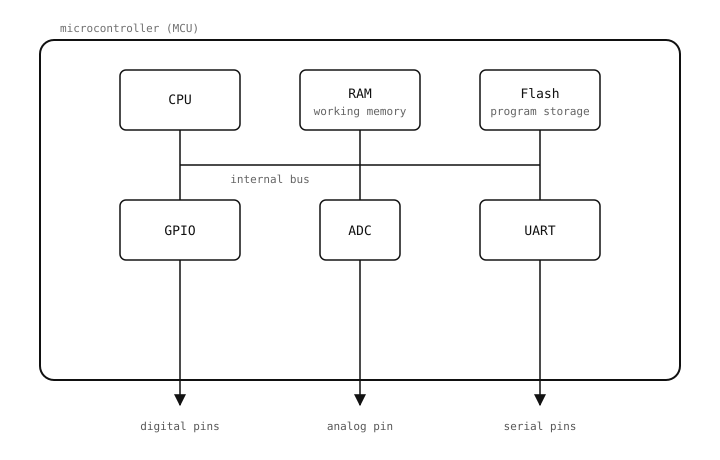

3.1. Microcontrolere¶
OpenMV Cam funcționează pe un microcontroler (MCU): un singur cip care combină un CPU, memorie de lucru (RAM), stocare pentru programe (memorie flash) și un set de periferice – blocuri hardware pentru interacțiunea cu lumea exterioară.
Perifericele sunt partea interesantă. Fiecare este o bucată de siliciu dedicată unei singure sarcini: forțarea unui pin la nivel ridicat sau coborât, măsurarea unei tensiuni analogice, transmiterea octeților pe o magistrală serială. CPU configurează și citește fiecare periferic prin registre – adrese de memorie fixe pe care hardware-ul le monitorizează și le actualizează.
MicroPython încapsulează aceste registre în clase din cadrul modulului machine. machine.Pin(...) returnează un obiect care controlează un pin de intrare/ieșire de uz general (GPIO) – un fir pe care cipul îl poate menține la nivel ridicat (în jur de 3,3 V) sau coborât (în jur de 0 V), sau pe care îl poate citi ca fiind una dintre aceste două stări atunci când ceva extern îl forțează. machine.ADC(...) expune convertorul analog-digital, care măsoară tensiunea de pe un pin și o raportează ca număr. machine.UART(...) rulează un emițător/receptor asincron universal (UART) – un periferic care trimite și primește octeți câte un bit pe rând, pe o pereche de fire, TX (transmisie) și RX (recepție). Alte clase acoperă restul perifericelor. Scriptul citește și scrie obiecte Python; MicroPython traduce fiecare acces în citirile și scrierile de registre corespunzătoare, iar acestea mută biți pe fire fizice.

Un MCU împachetează CPU, memoria și perifericele într-un singur cip. Fiecare periferic este expus către Python printr-o clasă din modulul machine.¶
3.1.1. Bucla principală¶
Aproape fiecare program pentru microcontroler are aceeași formă: o configurare unică la începutul scriptului (importul modulelor, configurarea pinilor, deschiderea magistralelor), apoi o buclă infinită while True: la final. În interiorul buclei, programul citește intrările, ia decizii și actualizează ieșirile la nesfârșit. Bucla este programul; când scriptul se încheie, dispozitivul încetează să mai facă orice.
# setup, runs once
from machine import Pin
led = Pin("P0", Pin.OUT)
# main loop, runs forever
while True:
led.value(1)
# ... do work ...
led.value(0)
# ... do other work ...
Această formă – configurare o singură dată, apoi buclă la nesfârșit – este modelul buclei principale. Tot ceea ce urmează se referă la ce se află în interiorul acesteia.
3.1.2. Control în timp real¶
Un program de desktop rulează alături de multe altele. Sistemul de operare îi planifică activitatea pe unul sau mai multe fire de execuție – fluxuri independente de execuție între care comută milisecundă cu milisecundă. Când un fir de execuție așteaptă o operație de I/O (disc, rețea, utilizatorul mișcând mouse-ul), sistemul de operare predă CPU altuia. Programul este în mare parte orientat pe evenimente: managerul de ferestre apelează codul tău când sosesc intrări, biblioteca HTTP reia codul tău când sosesc octeți pe socket. Ceva mai mare te apelează pe tine.
Un program pentru microcontroler este opusul. În mod implicit nu există niciun sistem de operare, niciun planificator și niciun alt fir de execuție. Bucla principală tocmai prezentată este singura buclă. Perifericele declanșează întreruperi sau expun indicatoare de stare; bucla le interoghează sau gestionează direct întreruperile. Dacă bucla se blochează într-un time.sleep_ms(1000), dispozitivul nu face nimic timp de acea secundă; nu există niciun alt fir de execuție care să umple golul.
Decurg două consecințe care se aplică pretutindeni:
Timpul este real. Citirea unui pin de două ori într-o buclă strânsă durează microsecunde; o pauză de zece milisecunde înseamnă zece milisecunde în care nu se întâmplă nimic altceva. Modelul de temporizare neblocantă este răspunsul.
Hardware-ul este real. Setarea
machine.Pin.valuela1aplică aproximativ 3,3 V pe un fir fizic; setarea la0aplică acolo aproximativ 0 V. Alte părți ale circuitului văd acea tensiune imediat – inclusiv orice componente pe care pinul le poate deteriora dacă este forțat greșit.